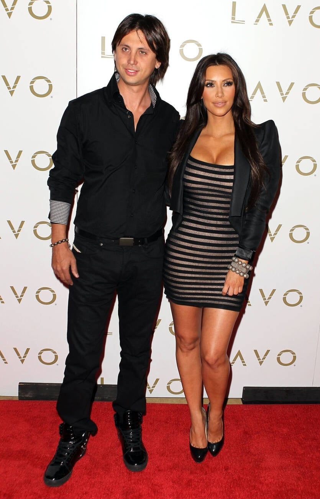
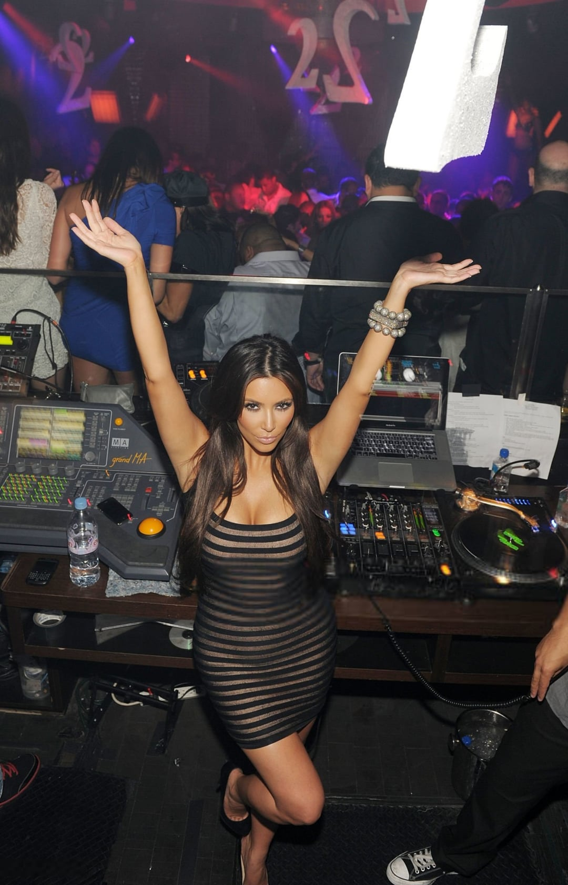
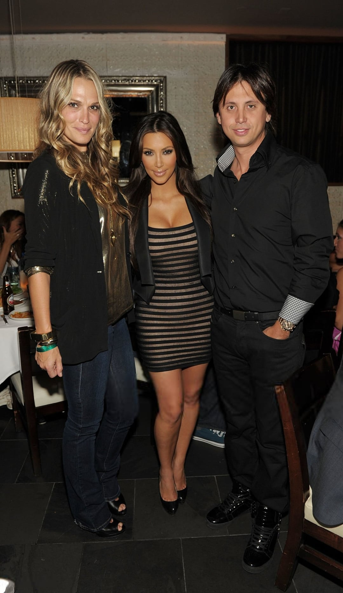

Sorry about it.
The Date
Firstly, I would like to thank my date from last night for the inspiration behind this essay. Let me set the scene. I am on a date and I asked this man for his hottest take, because I myself am quite the controversial figure and I like to know what I'm working with. If anyone is wondering, the date went fine. Honestly I've never had a bad date, but that also might be a me thing because I can talk to a brick wall. But there will not be a second date.
His take might've been fair in his view. But from a well-traveled, well-read man, it landed like a confession. He said the feminist movement as it exists today is harmful, but he still believes in equality. Sure. The way people believe in exercise but never go to the gym.
And while yes, some aspects of neo-feminism talk down on men, that doesn't invalidate the entire movement. That's just a loud corner of it. And it probably never even occurred to him to ask why feminism is evolving the way it is. What part did he play in that? It wouldn't cross his mind. The patriarchy never has to think about itself.

Look at Kim Kardashian. Ray J leaked her sex tape and the world called her disgusting, said she'd never amount to anything. Ray J walked away clean. The same men who spread it around, watched it, joked about it, were the ones calling her worthless for it. However; Kim is that girl so she became a billionaire anyway, but that's not the point. The point is she was never supposed to recover. He was never expected to answer for it.
Even women distance themselves from the F-word. Kareena Kapoor once told an interviewer that she believes in equality but isn't a feminist. One of the biggest actresses in the most populated country in the world, a country that still struggles deeply with feminism, and that's what she gave her platform to. A country where over 6,000 women are killed in dowry disputes every year, honor killings go largely unrecorded, and marital rape is still not a crime.
When a woman of that stature says she's not a feminist, she gives an entire generation of women permission to dissociate from their own liberation. She benefits from every door feminism opens for her.That's not neutrality. That's ingratitude with a microphone.
She's not like other girls. She's a cool girl.
Women are expected to fight for their own liberation and do it politely enough that men don't feel threatened by it."Well-behaved women seldom make history" exists for a reason. We know this. We put it on tote bags and coffee mugs. And yet every time a woman is loud about it, the world acts shocked and tells her this is why everyone hates feminism. Actually what are you talking about? You can't pretend to agree with equality until someone brings it up in a way you don't like.
I work in machine learning. Women make up about 23% of software engineers, but in ML and AI that number drops to 10-15%. Honestly, it's kind of funny to me because machine learning has always given me girly vibes. It's creative. It's intuitive. You're teaching something how to learn. You're finding patterns. You're making something beautiful out of messy data. Those are feminine traits to me, but that's a different essay.
I am glad to have had mostly great work experiences, but there was this one job that I can't not talk about. I was the only woman in a room full of men for six months. Six months of listening to them talk about women like we weren't people. Lucky for me, they decided I was one of the cool ones, so I got to stay in the room. But it was disgusting. And it was inappropriate.
And one day, my coworker slipped. He told me that pretty people aren't smart and no one wants to talk to them about technical things. I called him out. His correction was "sorry, I meant good looking men." It wasn't a joke. It was the mask coming off. They didn't want women in these roles. And it wasn't just talk. The entire time I was there, not a single other woman's resume got a chance. That's the thing about the silent jabs and the casual comments. They're not just words. They're the system doing exactly what it was designed to do.
A dead brazilian man rewired my brain
I read an excerpt of Paulo Freire's Pedagogy of the Oppressed when I was sixteen years old in Ms. Eastman's AP Lit class. I still have the printout 10 years later. I sat at my desk reading it and felt like someone had finally given me the language for something I'd been feeling my whole life. Everyone should read this book, by the way. It explains more than feminism. It explains why the cycle of violence repeats everywhere. How a people can endure unimaginable suffering and then turn around and inflict it on someone else without recognizing themselves in the act. Look at Israel and Palestine. Freire would tell you that's not a contradiction. That's the theory working exactly as he described it. The oppressed internalize the oppressor so deeply that when they finally gain power, they reproduce the only model of it they've ever known.
Freire says the oppressed internalize the oppressor, try to become him to reclaim power, and that the cycle only breaks when the oppressed refuse to reproduce it. Not when the oppressor has a change of heart. He won't. He benefits too much from the structure to dismantle it, and he's too embedded in it to choose empathy. That part I don't fully buy.
I strongly agree with this principle, that the oppressed should not internalize victimhood and that they should rise from the conditions imposed on them, but I have to ask: Why shouldn't the oppressor be held accountable?
Oh my god, here's the worst part. We can't even oppress men back. We don't have the structural power to become the oppressors. And yet they act like that's what feminism is going to do. Like we're one book club away from flipping the entire system. That's how fragile the grip is.
But the oppressed fighting back is not the same thing as the oppressed becoming the oppressor. And men can't tell the difference. The suffragettes were jailed. They were force-fed. They chained themselves to railings and set things on fire. And people called them hysterical. Dangerous. Too much.
Women advocate for themselves and the world acts like we're staging a coup. We're not. But we will fight for ourselves. If that makes you uncomfortable, you need to ask yourself why a woman raising her voice feels like a threat to your power.

I love men
This is where feminism and misandry enter the conversation.
Listen, I love men. I think men are the coolest. Some of the most influential people in my life are men. And you know what makes them great? They are secure in themselves. They don't hear the word feminism and flinch. They listen. And they never lost a single thing. So no, I don't agree with misandry.
But can you blame the women who end up there? A kid gets bullied every day and grows up bitter and angry and the world says "well yeah, of course he did. Look what he went through." A veteran comes home and can't trust anyone and that's trauma. I'm not saying these aren't completely reasonable reactions to traumatic events - I am just pointing out the hypocrisy. We pathologize women's anger while romanticizing men's. The "angry young man" is a literary archetype. The angry young woman is a liability.
Women experience centuries of systemic oppression, and the moment some of them get angry about it, they're why feminism is failing. They're why no one wants to be a feminist.
I don't think most men are bad. I really don't. But the wrong men are loud. The good men don't make the news because a man saying "yeah totally, women deserve equal rights" is not a headline. There's no sensationalism in being reasonable. So instead, some dumbass men's rights podcast gets the platform, and it bolsters every insecure man who was already looking for permission to feel threatened. And suddenly that becomes the voice of men in the conversation.
That's not fair to men either, but at the same time these men are quick to say "not all men" the moment women generalize. Fine. Agreed. But then they reduce the entire feminist movement to the handful of voices they find most threatening. You don't want to be judged by the worst of your group? Us either.
So I'm not talking down on men, but if more men were secure enough to listen, feminism wouldn't even be a debate. A strong woman is not your enemy. A strong woman honestly could be the best thing that could ever happen to you. So maybe feminism doesn't have a woman problem. Maybe it has a male insecurity problem. Ironic.
I say the F-word a lot
I know how this could be read. I have spent this entire essay telling you I love men. I have said, clearly, that I don't agree with misandry. And someone will still read this and reduce it to a salty woman who can't let it go.
I had to give a second thought to even writing this because I didn't want employers to think I was difficult. But whatever, I am going to call it out when I see sexism, and if that makes me hard to work with, then I don't want to work there anyway. The fact that I felt the need to include this caveat is, itself, the entire argument of this essay.
That's the game. A woman cannot advocate for herself without first proving that she is palatable enough to be taken seriously. I'm not angry. I'm not a misandrist. I am a woman who believes you cannot stand for equality between the sexes and refuse to call yourself a feminist. That's it. That's the whole take.
Freire said the oppressor can't free you. Fine. But a woman who refuses to even name herself as oppressed? She's doing the oppressor's work for him. Kareena Kapoor stood on a stage that feminism built for her and said she's not a feminist. My date makes his living off founders that feminism made possible and still called the movement a problem. I figured this out when I was sixteen. It's not complicated. And if you are a woman who doesn't consider herself a feminist, then disrespectfully, you are an idiot. Sorry about it.



Business casual at the club. Behind the DJ booth and running empires. This is what it means to be a woman.